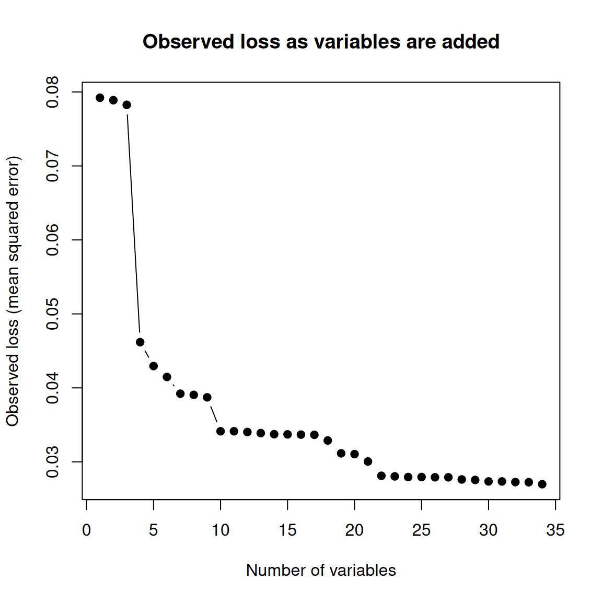
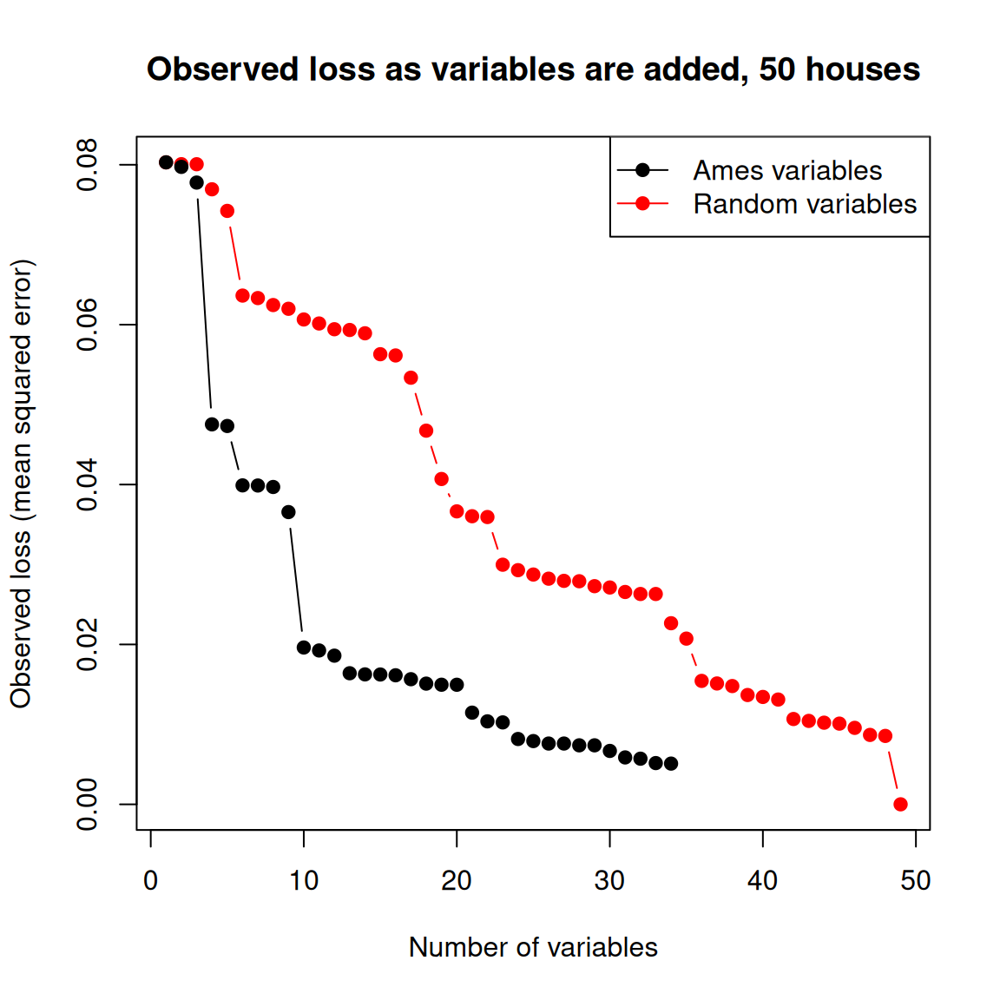
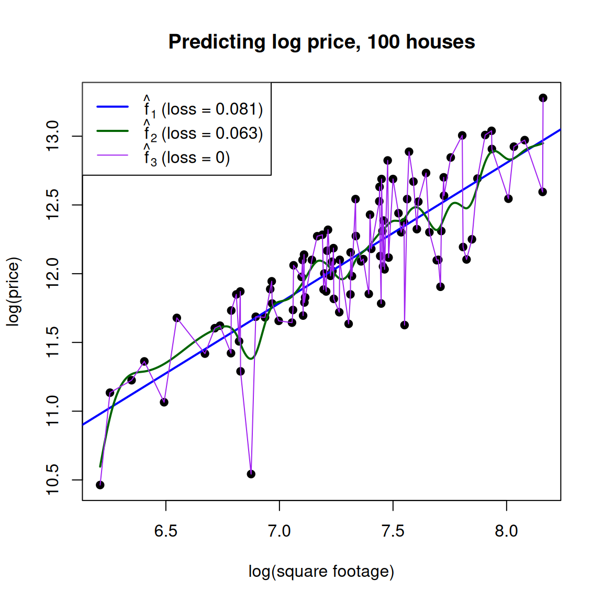
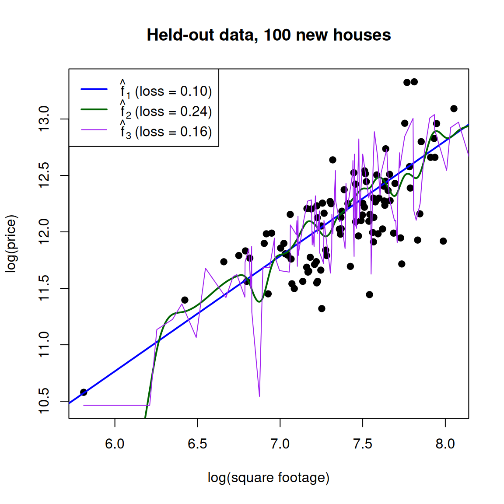
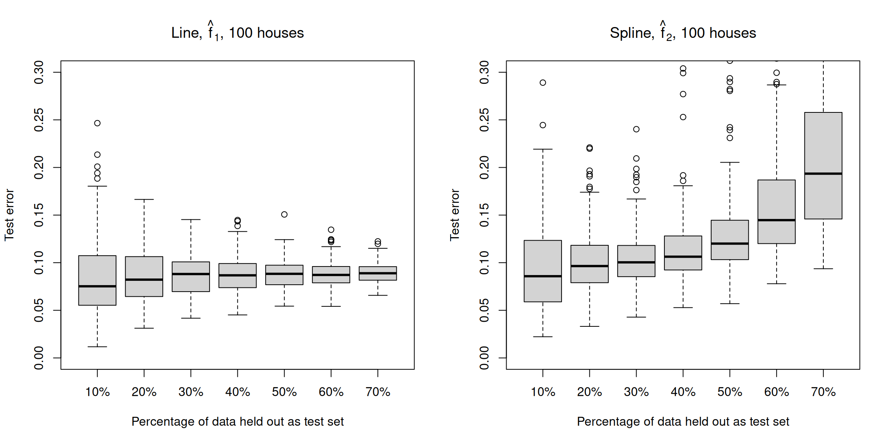
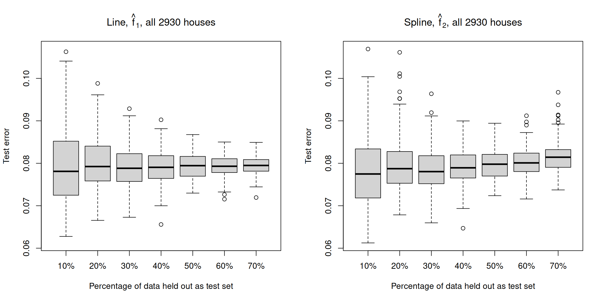
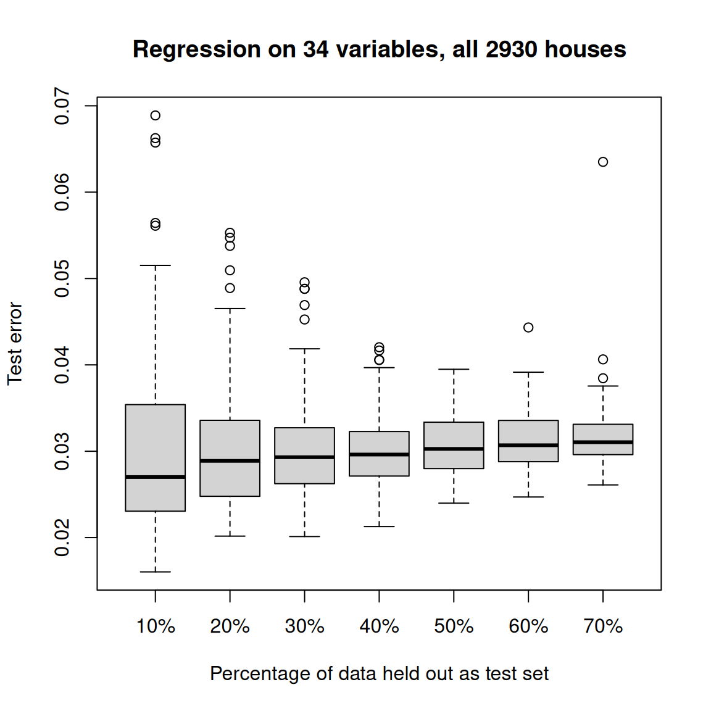
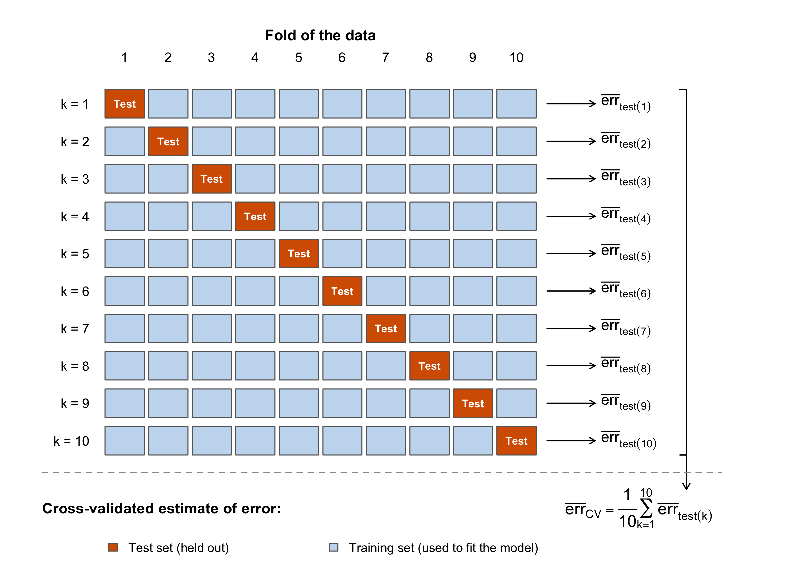

Basics of Prediction
Corresponding reading
This material is not directly covered in either of the books (in Agresti and Kateri (2021), it is sprinkled in different places).
I would recommend reading Chapters 7.1-7.3 in (hastie2009?) (and optionally Chapters 7.4-7.5); a free PDF can be found here
In prediction, we are primarily focused on \(\hat{f}(x)\) as a method of giving us predictions of \(Y\) if we know a vector of its predictors \(x\), \[\hat{Y}=\hat{f}(x).\] From this prediction framework, linear regression estimates a prediction function \[\hat{f}(x)=\hat\beta_0+\hat\beta_1x_1+\ldots+\hat{\beta}_p x_p.\] In prediction, instead of saying we estimate the function, you will often hear this described as fitting or training a function. This is because we will usually choose the \(\hat{f}\) that best fits the data, which is measured in terms of minimizing our chosen loss function, like those introduced earlier during our estimation section: \[\sum_{i=1}^n l(Y_i, \hat{Y}_i).\]
Measuring Performance via Loss Functions
How do we evaluate whether \(\hat{f}\) is a good prediction model? For example, what if in my regression model I used 10 variables instead of 4? Those are two different prediction models; call them \(\hat{f}_{10}(x)\) and \(\hat{f}_{4}(x)\). Which will give a better prediction? We could ask a similar question if we wanted to compare a linear model to alternative functions \(f\). It all comes down to evaluating the predictions they make, regardless of the specific details of the form of \(f\).
Suppose we have a random point \((Y,X)\), and we want to measure how well \(\hat{f}(X)\) predicts the corresponding \(Y\). We generally measure our performance using loss functions. For example, squared error loss gives us \[l(Y, \hat{f}(X))=(Y - \hat{f}(X))^{2}\] This measures how well we will predict any particular realization of the pair \((X,Y)\). We would like to measure the average of this quantity over the whole population, i.e., over all \((X,Y)\) values in the population \[Err=E[l(Y, \hat{f}(X))]\] We call this the generalization error, which is the average error we expect for a new observation drawn from the population. For squared error loss, this would be \[Err=E[(Y - \hat{f}(X))^{2}]\] We obviously cannot evaluate this expectation without some serious assumptions about the true distribution of \(Y\) relative to \(X\) – including assuming what the right model \(f\) is! That would defeat the purpose. But we can consider ways to estimate this quantity.
Note
Note again this loss is measured over what naturally occurs in the population – that’s what expectation tells us. Being able to predict \(Y\) from \(X\) doesn’t tell us that \(X\) caused the outcome \(Y\).
Observed Error
So what if we try to estimate the generalization error? A natural estimator would be to replace the expectation with an average over our data, \[\bar{err}=\frac{1}{n}\sum_i l(Y_i, \hat{f}(X_i))=\frac{1}{n}\sum_i (Y_i - \hat{f}(X_i))^{2}.\] This can be called the training error or the observed error.
Indeed, this is the same quantity we minimized to get our estimates \(\hat\beta_j\) that form \(\hat{f}\).
However, this will be a poor estimate of generalization error. We can see this if we consider our earlier question – what if I used 10 variables instead of 4 in my linear regression prediction?
It seems like we have reduced our error by adding more variables, which naively seems like a good thing. However, even if I add random variables that are completely independent of our \(Y\), we will still decrease the loss, and with enough predictors, will make the loss go to zero!

This is a general phenomenon: mathematically, adding more variables to the linear model will always either decrease or keep the same your observed loss, even if there is no relationship. This is easy to prove for linear regression.1
Theorem 1 If \(k<p\), then the observed loss for a fitted linear model trained on \(p\) variables will always be less than or equal to that based on any subset of \(k\) variables, \[\frac{1}{n}\sum_i (Y_i - \hat{f}_p(X_i))^{2}\leq \frac{1}{n}\sum_i (Y_i - \hat{f}_k(X_i))^{2}\] where \(\hat{f}_p\) is a linear model trained on \(p\) predictors, and \(\hat{f}_k\) is a model trained on a set of \(k\) predictors which are a subset of the \(p\) predictors of \(\hat{f}_p\).
Proof. By definition, the estimates \(\hat\beta_0,\ldots,\hat\beta_p\) that make up \(\hat{f}_p(X_i)\) are those that minimize the squared-error loss, \[\min_{\beta_0,\ldots,\beta_p} \frac{1}{n}\sum_i (Y_i -\beta_0-\beta_1x_{1i}-\ldots-\beta_px_{pi})^2\] Without loss of generality, let’s assume that the \(k\) predictors used in \(\hat{f}_k\) are \(X_1,\ldots,X_k\). Then the coefficients of \(\hat{f}_k\) minimize \[\frac{1}{n}\sum_i (Y_i -\beta_0-\beta_1x_{1i}-\ldots-\beta_kx_{ki})^2\] But this quantity is equivalent to the loss using all \(p\) predictors where we’ve forced \(\beta_{k+1},\ldots,\beta_p\) to equal exactly zero. Which means any set of values for the coefficients considered for \(\hat{f}_k\) was also a possible set of coefficients considered for \(\hat{f}_p\). Thus either \(\hat{f}_p\) chooses coefficients that have the same loss as \(\hat{f}_k\) (for example, by choosing the same coefficients as \(\hat{f}_k\) and setting the remaining to zero) or it was able to reduce the loss by a different set of coefficients that have some non-zero coefficients for \(\beta_{k+1},\ldots,\beta_p\). Either way, the achieved observed loss of \(\hat{f}_p\) is less than or equal to that of \(\hat{f}_k\).
Bias of the estimate
Clearly, adding predictors that have nothing to do with our data should not improve our prediction. But is there a problem in our logic? Is it a wrong estimate? Replacing an expectation with a sample average is logic we’ve used many times before to estimate an expectation.
The problem is that we are both choosing \(\hat{f}\) and estimating the expected loss of \(\hat{f}\) on the same data. This makes the estimate of error on our data no longer unbiased.
Consider a simple univariate (single predictor) model where we just try to predict our price based on the log of square footage. And suppose that we do not limit ourselves to a line. We could fit a curve \(\hat{f}\) that goes through every point, so its loss is exactly zero:

But it turns out I held back some of this data and didn’t use it in the above choice of \(\hat{f}\). When I plot the new data that was not used in choosing \(\hat{f}\), the curves don’t exactly fit it:

Clearly the curve that I forced to go through every point does not have zero error on this unseen set of points. And indeed, this will be true for every set of new data, so clearly the estimate of zero error is biased and underestimates the actual generalization error. This points out the fundamental problem in using the same data to both fit the model and evaluate.
Complexity of a Model
When we compared different choices of \(\hat{f}\) in our univariate example, we looked at three possible estimated functions. We can rank them intuitively by how simple they are, with the linear model being the simplest and the model fitting every point being the most complex or adaptable to the observed data.
We often call this the complexity of a fitted model. Complexity can be measured in different ways, depending on what set of models you are considering. For example, if I limit myself to only linear regression models, including more variables makes my model more complex, i.e., able to fit my data more closely. The number of parameters \(p\) dictates how complex my model is.
In my example above, I restricted myself to one explanatory variable, but I considered a wider class of models. The complexity of my \(\hat{f}\) could be measured in different ways, for example, by the curvature of the function.
Strategies for Estimating Error
There are different strategies for estimating the generalization error. There are a number specifically for regression. For example, the Adjusted \(R^2\), the F-test, and Mallows’ \(C_p\) are all based on evaluating the reduction in loss you observe relative to the reduction in loss you would get if you added random noise (like I did above). There are other methods that are more general and based on evaluating the likelihood of your data, like AIC and BIC.
What we will focus on, however, are general-purpose measures that are based on sampling and holding out your data.
Test/Training Paradigm
The exercise above demonstrates a possible solution to our problem – use some of the data to fit the model, and hold some data back to evaluate the model. This is often called a training-test paradigm. You randomly divide your data into two unequal parts: the larger chunk (e.g. 70-80% of your data) called the training set or training data and the smaller chunk the test set or test data.
As the name suggests, you use the training data to train or estimate your \(\hat{f}\), i.e. to minimizing the training error, \[\bar{err}_{train}=\frac{1}{n_{train}}\sum_{i\in train}l(Y_i,\hat{f}(X_i))\] Then you evaluate the performance of \(\hat{f}\) on the held-out test data. This gives us the test error, \[\bar{err}_{test}=\frac{1}{n_{test}}\sum_{i\in test}l(Y_i,\hat{f}(X_i))\] Since the \((Y_i,X_i)\) in the test data weren’t used in creating the estimate \(\hat{f}\), the test data is independent of \(\hat{f}\), and \(\bar{err}_{test}\) will give us an unbiased estimate of the error in the population, assuming that your data is i.i.d. from the population.
For example, in my Ames data, if I use a random 80% to fit my models, and the other 20% to evaluate them, I get the following results:
| Prediction | Training error | Test error |
|---|---|---|
| \(\hat{f}_1\) (line) | 0.079 | 0.082 |
| \(\hat{f}_2\) (spline) | 0.076 | 0.084 |
| \(\hat{f}_3\) (connect the points) | 0.032 | 0.108 |
| Regression, 34 variables | 0.026 | 0.030 |
We see in all cases that our training error is less than the test error.2 Moreover, we see that \(\hat{f}_3\), which tried to fit every point perfectly,3 has both the largest difference between the training error and the cross-validation or test-training error – as well as the worst performance on the test data.
Repeated Test/Train
A common issue with the test-train paradigm is what percentage of the data we should put in our test set versus our training set? The more data we have to train with, the better our model is likely to be. However, if I don’t have enough in my test set, then I won’t get a very good estimate of the error. We are taking a mean to measure our loss, and we know that the variability in that will be much larger with a smaller sample.
Here’s an illustration if we just had 100 observations in our house data, and we chose different percentages to be held out of the training data for our two possible models \(\hat{f}_1\) (the line) and \(\hat{f}_2\) (the more flexible model, called a “spline”):

We see that if we have a small percent in our test data, then we have very high variability. While I’m doing it repeatedly, the usual idea of test/training is to do it only once. But these simulations point out the problem with only doing it once: the estimate we get could be quite off by chance, especially with few observations in my test set. However, we also see that if we don’t have enough data to train on, then the more flexible model, \(\hat{f}_2\), starts having poor performance because it didn’t have enough data to get a good prediction. This is a general tension that we see in prediction in the size of our test set versus our training set. We generally want to get the best model we can, so we will generally err on the side of putting more data in our training set – but we will pay a price in having a poorer estimate of the error.
We also see that if we have more data to begin with (like all of the almost 3,000 observations), we pay less of a penalty for having a larger test set because we have a larger absolute number of observations in our training set:

We can see that when we use multiple regression with all 34 variables to predict sales price, even with all of our data, we see similar problems to those of our more complex \(\hat{f}_2\): there is not enough training data if we make our test set too large a proportion of our data.

All of this points to the dangers of doing a single random division of our data into test/training sets. Indeed, the above example suggests we will do better to repeat this many times, so that we will have a better idea of the actual error and not be subject to the luck of the draw of the particular test set we have.
Cross-Validation
However, many iterations of the test/train procedure can be expensive. We have to refit the model every time; regression is very fast, but with more complex models, each fit can be expensive, particularly if there are many variables and a large number of observations. But to avoid the problems we saw above, we will likely need many random draws to get a reliable answer.
Cross-validation is a clever way to use the data to get estimates of error which do not require as many fits.
The idea of cross-validation is to divide our data into \(K\) partitions or folds, so each fold holds a \(1/K\) fraction of our data. Typically \(K=10\). Then, each fold takes a turn being the test set, and the model is fit on the data from the other \(K-1\) folds. This means each observation is used exactly once in the estimate of the error – we get complete coverage of the data. And we fit the model to the data exactly \(K\) times.
In contrast, if we did random test/training splits of our data into test sets containing a fraction \(1/K\) of the data and only did \(K\) random splits of our data, the probability we see any particular observation in at least 1 of the test sets is \[1 - \left(1 - \frac{1}{K}\right)^K\approx 0.65 \quad\text{(for $K=10$)}\] (this is just 1 minus the probability you don’t see the observation in any of the \(K\) test sets). So for random test/training sets, we have to do many more random splits into test/training than just \(K\) to have a high probability of testing the fit against all of our observations.
So cross-validation provides an efficient way to get good coverage of all of our data.

When we do this on our models above, we get the following estimates:
| Prediction | Training error | Single 80/20 split test error | Median test error, 200 random 90/10 splits | 10-fold CV error | SE of CV error |
|---|---|---|---|---|---|
| \(\hat{f}_1\) (line) | 0.0792 | 0.0823 | 0.0781 | 0.0794 | 0.0044 |
| \(\hat{f}_2\) (spline) | 0.0772 | 0.0839 | 0.0775 | 0.0786 | 0.0046 |
| \(\hat{f}_3\) (connect the points) | 0.0365 | 0.1084 | 0.1115 | 0.1134 | 0.0041 |
| Regression, 34 variables | 0.0270 | 0.0302 | 0.0270 | 0.0297 | 0.0028 |
NoteLeave-one-out cross-validation
This is a special case of cross-validation where there are \(K=n\) folds, so the model fit in each fold leaves out a single observation in the fitting of \(\hat{f}\). In some settings, like regression, once we have the fit on all of our data, we can actually analytically write down the equation for our model with a particular observation left out – we don’t need to recompute the model – so this can be even more efficient computationally.
What Error Are We Estimating?
We’ve actually been mixing up different possible goals in estimating the prediction error, which are important to keep in mind, and the above methods are not all equivalent.
- Model Selection: We’ve been implicitly comparing different models and asking – which is the better model to use?
- Model Assessment: We could be further along in our prediction model and have decided on a final model we want to deploy, say \(\hat{f}^*\). So we want to estimate the error of \(\hat{f}^*\) will be on future observations.
Notice how our estimates of error differ for these purposes. Cross-validation (and generally multiple train/test splits) is fitting a new model \(\hat{f}\) for each training set. So it’s really answering the question: on average, how does this modeling procedure perform? And we’ve seen that a single train-test run doesn’t do a good job of answering that question.
However, a final \(\hat{f}^*\) is based on one single model, and thus on the one single training set on which it was trained. So knowing the average performance doesn’t tell us specifically the performance of \(\hat{f}^*\) on future data. To do this, the train-test paradigm can be more appropriate.
In practice, we often are going to want to do both: explore to figure out the best model and evaluate our final choice. For this reason (if there is enough data!) we will combine cross-validation and a training-test set approach. Then we use the test set only to evaluate our final model on it (and nothing else!). With the remaining dataset, we will select the best type of model (e.g. the number or set of variables to use) using cross-validation.
This looks like:
- On the remaining dataset (i.e. without the test data), use \(K\)-fold cross-validation to select the best model.
- Fit the best model on all of the remaining data to create \(\hat{f}^*\).
- Evaluate \(\hat{f}^*\) on the test dataset to get a measure of its prediction error.
This strategy requires a fair amount of data to get both a good prediction model \(\hat{f}^*\) and good estimates of its error. So if that is not possible, we will often use CV and use its measure of standard error to give us a gauge of the possible range of errors we might get on our final model \(\hat{f}^*\).
Note
One thing to note is that the \(K\) measurements of error that we get from cross-validation are correlated with each other, since their training sets overlap. This correlation means the standard estimates of standard error \(S/\sqrt{K}\) (which are what is usually reported) are biased and usually underestimate the standard error. But they are still more useful than just ignoring the variability in your estimate of error!
Problems with Measuring Prediction Error
Assumptions
We said earlier that the test error will be unbiased for the error in the population if your data is i.i.d. from the population. This is because the data in the test set is randomly selected from the data, and the data itself is i.i.d. from the population, so we know that the average will be an unbiased estimate of the true mean, which is the generalization error, and from the WLLN that it will approach the true value for large sizes of your test set.
What if your data is not representative of your population? For example, you have a sample of convenience, like our early examples of web scraping. We don’t know how we collected the data, so we don’t know that the errors observed on the test set will have any relationship to a different population of data. Indeed, trying to apply a prediction model to a different population than the training/test data can be quite problematic. Many prediction models that are used throughout our tech world are trained based on convenience samples – data collected across a scraping of the internet. There have been well-documented examples of how these models can fail, particularly in ways that expose biases in who we collected data from.
Subpopulations
The above analysis assumes that minimizing the expected error over our entire population is our only goal. However, particularly when working with human subjects, the population is heterogeneous. We might minimize the expected error on the whole population, and still not do equally well on different portions of the population.
Thus, even if we have a representative sample on which we train our model and it accurately reflects this heterogeneity, our predictor \(\hat{f}\) might perform better on some subsets of the data than others. Since our goal in training the model is to minimize the average loss, if one subpopulation is a small portion of our data, then performing badly on that subpopulation will not necessarily create high average error so long as it does better on the larger group: \[\bar{err}_{train}=\frac{1}{n_{train}}\sum_{i\in train}l(Y_i,\hat{f}(X_i))=\frac{1}{n_{train}}\left[\sum_{i\in \text{group 1}}l(Y_i,\hat{f}(X_i))+ \sum_{i\in \text{group 2}}l(Y_i,\hat{f}(X_i))\right]\] Since the subpopulation will also be small in the test set, the test error can show this same problem.
If we are aware of these subpopulations ahead of time, we can choose to adjust our measure of error to equalize their importance, but only if we know about them in advance. Thus there is always the danger that prediction algorithms will not perform well on smaller groups or unusual observations.
A larger training set obviously helps here, if it is representative of the population, but only if it is paired with models that are complex or flexible enough to provide different predictions for different groups. This might mean providing more variables so that these differences can be detected, for example.
Inequity in prediction algorithms
These two issues (heterogenous populations and biases in our available data) can both lead to our prediction algorithms to create predictions that have negative societal impacts!
Example 1 Image classification is a common area where systematic bias in prediction algorithms have historically been reported. Some are fairly benign, e.g. cows on a beach being misclassified as other types of animals (beery2018?). Beaches are clearly an atypical example of where cows are found so there are unlikely to be many photos of them on a beach; they are usually on farms or grassy fields. So this points out that prediction algorithms can be using features (i.e. predictors) like the background of the photo to make their predictions, that are not actually causally related to being a cow.
Other documented examples are not benign, particularly when they involve mistakes regarding humans. In these situations, errors can also have high-stakes outcomes, such as automatic face identification algorithms by law-enforcement agencies.4 Similarly, historically studies of health outcomes or drug impacts used primarily male participants (often justified to avoid complications due to possible pregnancy). But it turns out women are not just small men and such studies missed the health implications in women.
References
Agresti, Alan, and Maria Kateri. 2021. Foundations of Statistics for Data Scientists. Chapman; Hall/CRC.
Footnotes
This same problem can be observed in other types of models, not just linear regression, where as you increase the complexity of the fit you can drive the error to zero.↩︎
This doesn’t have to be the case, but it will often be the case.↩︎
It was not able to fit it exactly, because for this random training set, multiple observations had exactly the same square footage, but different sales prices, so it was not possible to fit all of them perfectly.↩︎
Though it should be recognized that it is well-documented for decades that humans are also very bad at identification of people of an ethnicity that is not their own.↩︎